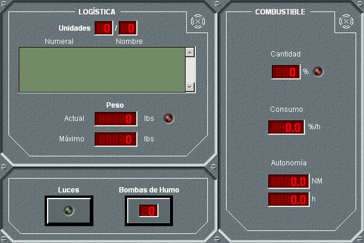
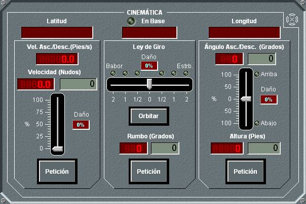
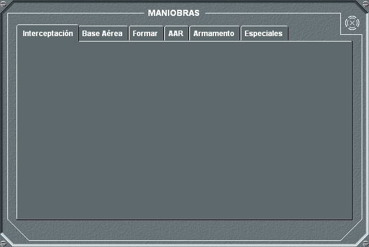
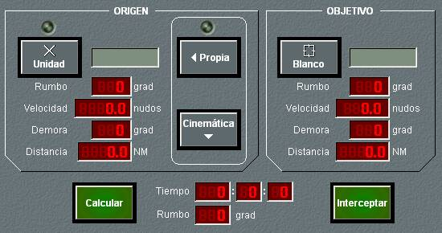
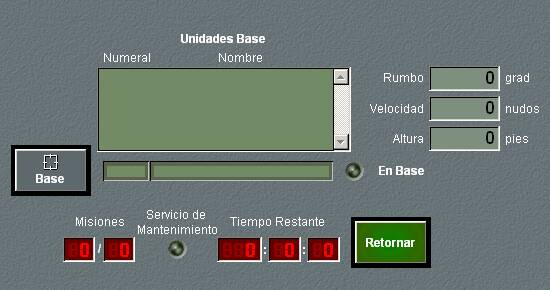
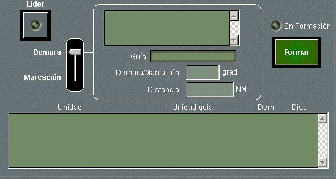
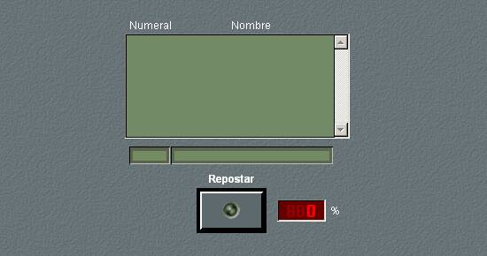
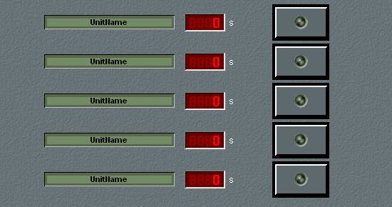
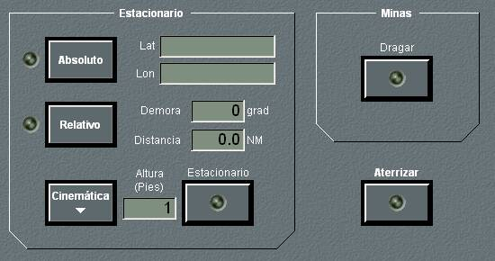

Logística / Miscelánea / Combustible

Este panel de detalle agrupa las siguientes funciones:
- Logística: Muestra la lista de unidades embarcadas y los valores del peso actual y el máximo permitido.
- Misceláneos: Permite realizar las siguientes operaciones:
- Encender y apagar las luces de navegación.
- Lanzar Bombas de Humo, y consultar la cantidad remanente en pañol.
- Combustible: Muestra el valor del nivel de combustible en tanto por ciento respecto del nivel máximo, incluyendo un led que indica cuando entra en reserva, el consumo horario y la autonomía de la unidad en millas y horas a la velocidad actual.
Cinemática / Ley de Giro

En este panel se muestra la situación de la unidad propia y la base en la que se encuentra, en el caso de que estuviera en una, así como el rumbo, el ángulo de ascenso / descenso, la altura y la velocidad horizontal y la de ascenso / descenso. También se muestra el porcentaje de daño que afecta a la altura y a la velocidad.
Este panel permite realizar las siguientes maniobras:
- Cambio de rumbo mediante orden de rumbo a seguir: Introduciendo el valor deseado de rumbo, y eligiendo el rango de giro (medio, estándar o doble) y la banda, al pulsar el botón Petición el helicóptero comienza a girar, teniendo en cuenta el rango de giro introducido y las características del helicóptero (tabla de giro) hasta que alcanza el rumbo pedido. A partir de este momento, el helicóptero vuela a rumbo constante, respecto al viento, hasta que se ordene otra maniobra.
- Cambio de rumbo mediante orden de giro: Seleccionando un rango de giro (Medio, estándar o doble) y la banda, al pulsar el botón Orbitar, el helicóptero comenzará a girar, teniendo en cuenta el rango seleccionado y las características del helicóptero (tabla de giro), de forma continua hasta que se realice una petición de rumbo, en cuyo caso el helicóptero deja de orbitar cuando se alcanza el rumbo pedido.
Ambas peticiones de cambio de rumbo no serán atendidas si se da alguna de las siguientes condiciones:
- La unidad está en Base
- La unidad está realizando alguna maniobra incompatible con el cambio de rumbo.
- El timón está destruido o la unidad ha agotado su combustible.
- Cambio de altura: Introduciendo el valor de altura ya el ángulo de ascenso / descenso deseados en los campos correspondientes, al pulsar el botón Petición, el helicóptero comenzará a variar su altura, de acuerdo con sus características (tabla de aceleración), hasta alcanzar la altura deseada. Para la introducción del ángulo de ascenso / descenso puede hacerse uso del botón Max., que rellena el campo con el máximo valor permitido para el modelo de helicóptero bajo control. La velocidad de ascenso / descenso se muestra en el campo correspondiente. Esta petición de cambio de altura no será atendida si se da alguna de las siguientes condiciones:
- La unidad está en Base
- La unidad está realizando alguna maniobra incompatible con el cambio de altura.
- La maquinaria está destruida o la unidad ha agotado su combustible.
- Cambio de velocidad: Introduciendo el valor de velocidad deseado en el campo correspondiente, al pulsar el botón Petición, el helicóptero comenzará a variar su velocidad, de acuerdo con sus características (tabla de aceleración), hasta alcanzar la velocidad respecto al viento deseada. Esta petición no se atenderá si se da alguna de las siguientes condiciones:
- La unidad está en Base
- La unidad está realizando alguna maniobra incompatible con el cambio de velocidad.
- La maquinaria está destruida o la unidad ha agotado su combustible.
La velocidad y el ángulo de ascenso / descenso solicitados pueden ser introducidos como un tanto por ciento del máximo de la unidad mediante las barras deslizantes.
Maniobras

El panel de detalle de la opción Maniobras presenta seis solapas en las que se puede elegir una de las siguientes maniobras.
Interceptación: En el panel de detalle de Interceptación se permite la introducción de todos los datos necesarios para calcular la maniobra de interceptación entre una unidad origen (que puede ser la propia o la que esté en Marca en la pantalla táctica) y una unidad objetivo.

Al pulsar el botón Unidad Propia o P. Marca, se toma como unidad origen la unidad propia o la que esté en Marca, respectivamente. Los datos de rumbo, velocidad, demora y distancia se adquieren automáticamente.
Al pulsar el botón Blanco, se toma como unidad objetivo la que esté en Hook en la pantalla táctica, o bien su posición en el caso de que el Hook no esté sobre ninguna unidad. Los datos de rumbo, velocidad, demora y distancia se adquieren automáticamente.
Al pulsar el botón Calcular, se calcula la interceptación, y si tiene solución, se proporciona el tiempo que tomaría la maniobra y el rumbo que debería tomar la unidad origen. Además, en la pantalla táctica se dibuja un esquema de la maniobra, presentando el punto de interceptación calculado.
Si la unidad propia se ha seleccionado como origen, se puede ejecutar automáticamente la maniobra de interceptación, pulsando el botón Interceptar cuando existe solución.
Base: Esta maniobra se utiliza para aterrizar en una base o para despegar de ella. A continuación se describe cómo se ejecuta cada una de estas maniobras.

- Para aterrizar en una base se elige una unidad de la lista, se introducen una velocidad y altura de retorno y se pulsa el botón Retorno. La unidad modificará automáticamente su rumbo, se dirigirá a la unidad elegida, a la velocidad y altura solicitadas, y aterrizará en ella. Esta petición no será atendida si se da alguna de las siguientes condiciones:
- La unidad está en Base
- La unidad está realizando alguna maniobra incompatible con esta.
- La maquinaria o el timón está destruidos o la unidad ha agotado su combustible.
- La maniobra es cinemáticamente posible, y no implica colisión.
Si durante la maniobra se pulsa de nuevo el botón Retorno (cuya leyenda se ha sustituido por Cancelar) se cancela la maniobra, quedando la unidad con el rumbo y velocidad que tiene en ese instante.
Cuando la unidad completa el aterrizaje en la base, de forma automática se ejecutan las siguientes acciones:
- Se apagan todos los sensores.
- Se apagan todas las comunicaciones.
- Se inicia Maniobra de Reabastecimiento de la unidad.
Las unidades que se muestran en la lista para poder seleccionarlas como base, son aquellas que tienen capacidad de portar helicópteros, y que son del mismo bando que la unidad propia. Además, una unidad puede seleccionar con el Hook cualquier unidad que detecte por sus sensores, y de la que identifique su numeral, para solicitarla como base y entrar en ella.
- Para despegar desde una base, se introduce el rumbo, la velocidad y la altura y se pulsa el botón Despegar, que sustituye al botón Retorno cuando el helicóptero está en base. Transcurrido un tiempo predeterminado, la unidad despegará y tomará el rumbo, la velocidad y la altura solicitados. Esta petición no será atendida si se da alguna de las siguientes condiciones:
- La unidad no está en Base.
- La maquinaria o el timón está destruidos o la unidad ha agotado su combustible.
- Se ha sobrepasado el número máximo de misiones continuas
- No ha transcurrido el tiempo mínimo entre misiones.
Formar: Esta maniobra se utiliza para crear una formación con varias unidades. A continuación se describen las acciones que pueden realizarse desde esta opción.

- Hacerse líder de una formación. Para ello se pulsa el botón Líder y a continuación el botón Formar. El indicador Led En Formación se encenderá en color verde. Esta petición no será atendida si la unidad está en Base.
- Integrarse en una formación. Para ello se selecciona un guía en la lista superior, en la que deben aparecer todas los helicópteros del mismo bando que se encuentren a menos de 20 millas (configurable en Galeon.ini), a continuación se introduce una demora o marcación y una distancia, seleccionando en la barra de desplazamiento la opción Demora o Marcación. Al pulsar el botón Formar, la unidad tratará de incorporarse a la formación volando a la demora / marcación y distancia indicada respecto a la unidad guía. El indicador Led En Formación se encenderá en color amarillo durante el tiempo que la unidad tarde en alcanzar la demora y distancia indicadas, y pasará a color verde cuando lo haya conseguido. Esta petición no será atendida si se da alguna de las siguientes condiciones:
- La unidad está en Base
- La unidad está realizando alguna maniobra incompatible con esta.
- La maquinaria o el timón está destruidos o la unidad ha agotado su combustible.
Pulsando de nuevo el botón Formar (cuya leyenda se ha sustituido por Cancelar), se cancela la maniobra, manteniendo la unidad el rumbo y velocidad que tiene en ese instante.
Repostar / AAR: Esta maniobra se utiliza para repostar combustible desde la base en la que se encuentra o desde otra unidad, para lo cual, las unidades deben disponer de la capacidad de entregar / recibir combustible, respectivamente.

- Cuando la unidad está en base, en este diálogo sólo se podrá seleccionar como unidad suministradora la unidad que actúa como base. Pulsando Repostar, se inicia el reabastecimiento de combustible. Pulsando de nuevo el botón Repostar, antes de que finalice el reabastecimiento, se cancelará la maniobra.
- Cuando la unidad no está en base, para repostar mientras vuela desde otra unidad (maniobra AAR) se elige la unidad desde la que se quiere repostar en la lista y se pulsa el botón Repostar. La unidad se dirigirá hacia el avión elegido, y cuando esté a la distancia apropiada volará junto a él y realizará el reabastecimiento. Esta petición no será atendida si se da alguna de las siguientes condiciones:
- La unidad está en Base
- La unidad está realizando alguna maniobra incompatible con esta.
- La maquinaria o el timón está destruidos o la unidad ha agotado su combustible.
- La maniobra no es cinemáticamente posible.
Mientras la unidad se dirige hacia la unidad elegida para repostar, el botón Repostar permanece amarillo. Una vez que inicia el reabastecimiento, pasa a verde. Pulsando de nuevo el botón Repostar, antes de que finalice el reabastecimiento, se cancelará la maniobra y la unidad conservará el rumbo, la velocidad y altura que tiene en ese instante.
Armamento: Esta opción no es una maniobra propiamente dicha, sino la capacidad de cambiar la configuración de armas de un helicóptero cuando éste se encuentra en Base o inactivo.

Al pulsar el botón a la derecha de la configuración deseada se inicia una cuenta atrás, transcurrida la cual se recarga el helicóptero de acuerdo a dicha configuración. La petición de recarga solo se ejecuta si la unidad está en Base o inactiva y el peso de la configuración es inferior al soportado por la unidad. La configuración cargada o cargándose se indica con el led asociado en verde o amarillo respectivamente.
Si durante el proceso de recarga de configuración, se pulsa de nuevo el botón correspondiente a la configuración pedida, la unidad recupera inmediatamente la configuración que tenía anteriormente.
Maniobras Especiales: Esta opción agrupa las maniobras de vuelo estacionario en un punto dado, aterrizaje fuera de base y dragar minas. A continuación se describe cada una de estas maniobras.

Los cambios en las condiciones cinemáticas y las maniobras que admiten las unidades cumplen la tabla de incompatibilidades especificada en Modelística – Plataformas – Maniobras – Incompatibilidad de Maniobras.